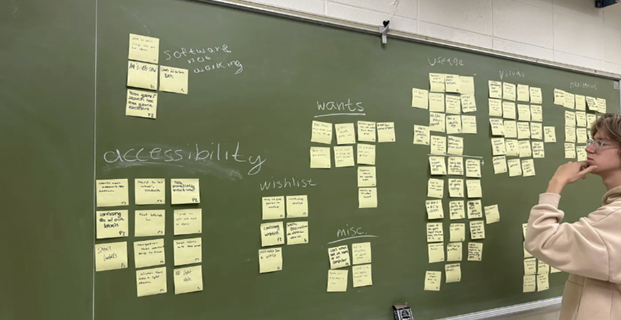
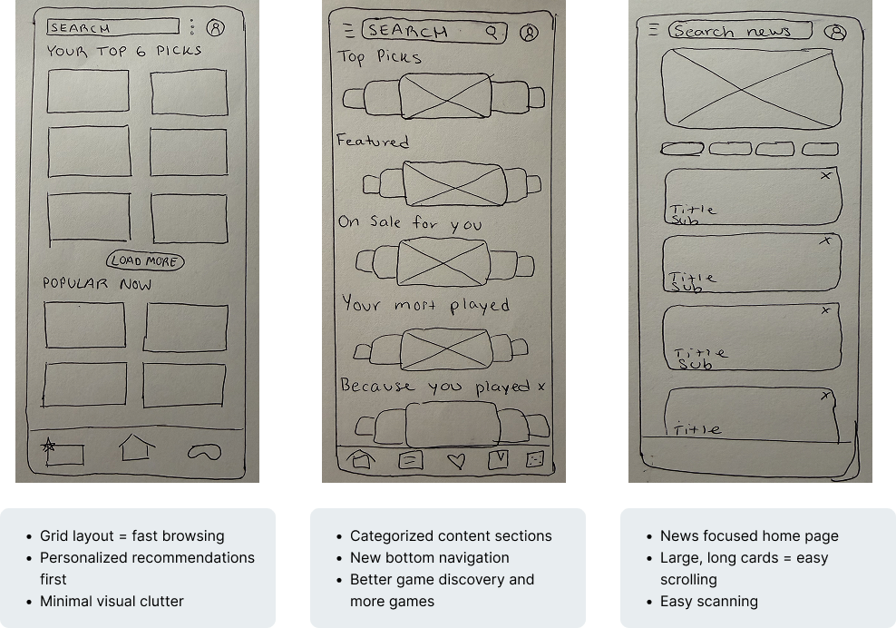
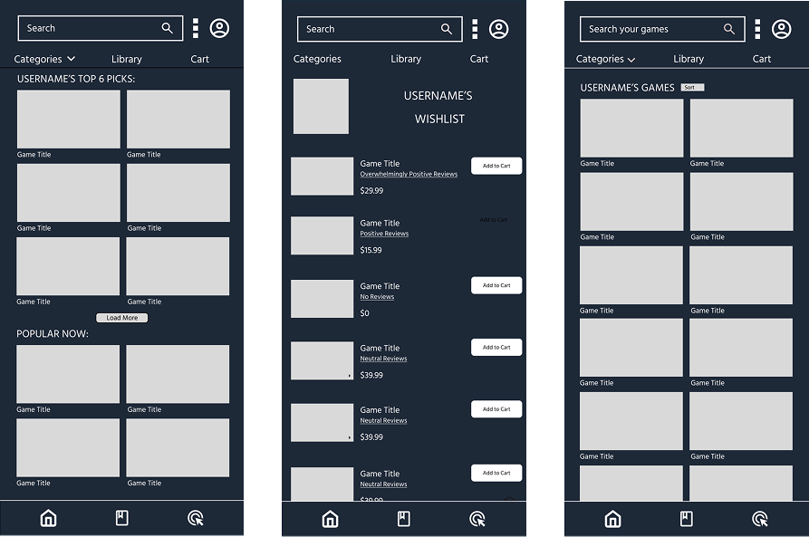
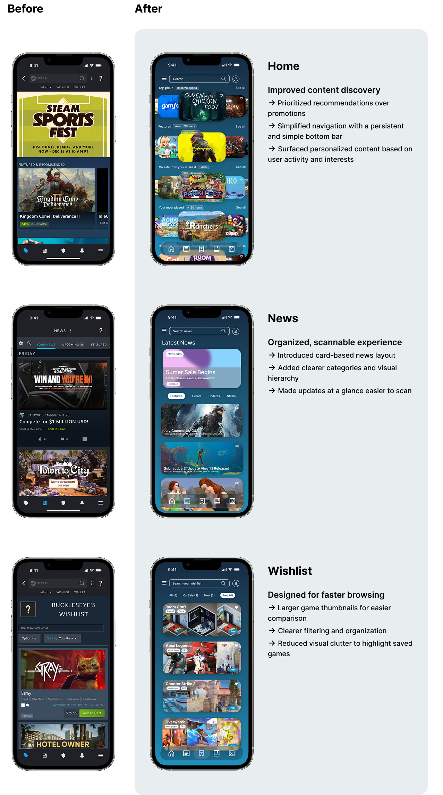

Steam Mobile App Redesign
Redesigned Steam’s mobile application to address wishlist management and navigation friction, giving the app a clearer, more intentional purpose beyond authentication (Steam Guard).


Overview
Our team picked the Steam mobile app for a class redesign project because the mobile version offered little advantage over the desktop client. We set out to bring clarity and purpose to the app for Steam’s very large user base.
Research
We ran four 20-minute usability interviews. In each one, a participant downloaded a free game and added one to their wishlist while we observed. We then used affinity mapping to group what we heard into themes: navigation, wishlist, visuals, and usability.

Participants said things like “Where even is my wishlist?” and “There is so much going on.” Four findings came up again and again:
- Users got lost while navigating.
- The wishlist was confusing.
- The home screen felt overwhelming.
- Users questioned why they would use the mobile app instead of the desktop app.
Goals
- Simplify navigation (especially wishlist functions).
- Make game discovery more intuitive.
- Give users a reason to return beyond convenience.
Through the four main findings that came up, we were able to narrow down the focus areas of our redesign:
- frequently became lost while navigating the app
- experienced confusion while favoriting and searching for games
- confused about the purpose of the app (address the question of “why wouldn’t I just use the desktop app?”)
Therefore, the apps main purpose is to complement the desktop experience by
allowing users to manage their Steam activities on the go and in a more seamless
way.
How might we…
simplify the Steam mobile experience so users can more intuitively navigate the app, whiling continuing to discover new games and keep up to date with ones already owned?
Process
We sketched several concepts, including a grid layout, categorized sections, and a news-focused home page. Low-fidelity wireframes came next, so we could refine the structure before moving into final designs.

Low Fidelity
We translated our strongest concepts into wireframes to refine the layout and information hierarchy. We focused on structure rather than investing in high-fidelity designs.

Final designs
The final design changes three areas of the app:
- Home: recommendations ahead of promotions, a persistent bottom bar, and personalized content.
- News: a card-based layout with clearer categories, making it easier to scan.
- Wishlist: larger thumbnails, clearer filtering, and less clutter.

Evaluating the redesign
I observed that participants completed the task more easily, encountering fewer points of confusion along the way. These findings suggested that the redesigned navigation and information hierarchy helped create a more intuitive user experience.
Next steps
If I continued this project I would…
What I learned
Understanding users, instead of relying on assumptions, led to our strongest design decisions. Tying each change to a specific user need also made it easier for me to explain my design choices.